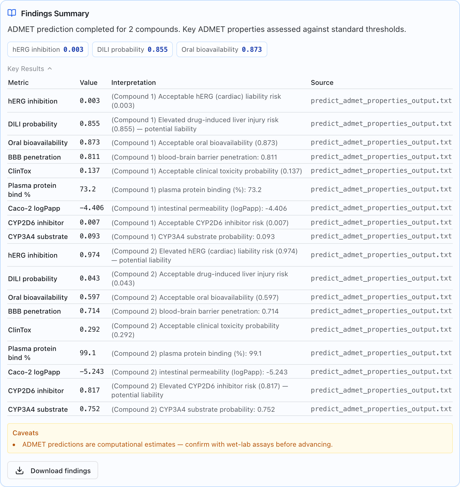

Tutorial 3 · Running a workflow & reading the reportStage 0 / 8
BioMate TutorialRun & Report
The everyday middle — run it, then read it
Run a tested pipeline, and read a report you can defend.
A workflow is a whole multi-step analysis, already tested and connected for you. You describe your goal in plain English, attach your data, and BioMate runs the pipeline on cloud computers and hands back one report — the results, every output file, and a complete record of how they were produced.
Running example: Predict ADMET Properties (AI) on three molecules — aspirin, caffeine, ibuprofen — a real, completed run. We'll watch it go from set-up, to live progress, to the report: one merged Results tab — the findings summary with every output file previewed below it — and the Reproducibility record.
Confirm & run→Watch live phases→Results · findings→Results · outputs→Reproducibility record
The ideas you need first
Five words that make the whole report readable.
You don't assemble the tools — you run a ready-made pipeline and read what comes back. These five ideas are all you need.
1 · WORKFLOW
The pipeline
A ready-made, tested multi-step analysis. You run it; you don't build it.
2 · PHASES / STEPS
The stages
Big phases, each made of individual tool steps. Each takes an input, makes an output.
3 · PARAMETERS
The settings
What the run uses — shown with sensible defaults before anything runs.
4 · QC GATE
The guardrail
An automatic mid-run check. It never silently passes a failed result.
5 · AFTER-RUN REPORT
The result
Two tabs: the merged Results view (findings + every output) and the Reproducibility record.
"Tested / validated" means each step uses a published, established method — not that the result is clinically proven. A workflow is in-silico triage, not a finished answer.
Background — the vocabulary every run shares
Step 1 · Set up & Confirm & Run
See exactly what will happen — before any compute is spent.
You asked for ADMET in plain English; BioMate picked the validated workflow and opened its panel. Now review the set-up on the right, then press Confirm & Run.
Pre-run · Workflow settings
Inputs mapped. This run takes parameters only — no data files to bind. Other workflows attach your FASTQ, CSV, FASTA, or SMILES file here.
Required parameters, filled in. Your molecule list (aspirin, caffeine, ibuprofen) and the prediction model are shown and editable.
Output & permissions. Where results are kept (BioMate-managed, 90 days) and that you're the Owner who can run it.
This is your chance to check or change everything first. Then Confirm & Run.
Nothing runs until you confirm
Step 2 · Watch it run — phases & QC gates
Live progress, and the quality gates in plain view.
In the Phases tab each step moves pending → running → completed in real time. The ADMET run shows its two steps and the QC gates it will enforce.
Running · Phases tab
Steps in real time. The first prediction step is running (0 / 2); the next step is still pending.
QC gates are cardiac-safety thresholds — CiPA hERG safety margin, qNet risk, APD90 prolongation, EAD probability. These are the limits the run checks against.
It never silently passes a failed check. If a result crosses a threshold the run flags it with the measured value versus the limit.
You can Pause or Stop at any time, and keep chatting while it runs in the background.
QC thresholds shown in full
Step 3 · Completed — the findings report
One readable summary, with numbers drawn straight from your results.
The run completes: a green Completed badge, and the report opens on the Results tab — a short, plain-language findings summary of what the run found, with the key values read directly from the result files.
Completed · Results tab

Completed, with a clear verdict. "ADMET prediction completed for 3 compounds" — the key properties assessed against standard thresholds.
Real values, front and centre. hERG inhibition 0.003, DILI probability 0.855, oral bioavailability 0.873 — pulled from the result files, not written by hand.
Expand for detail.Key Results opens the full per-compound table; Download findings saves the summary in one click.
Stated plainly. A Caveats note reminds you these are computational estimates — confirm with wet-lab assays before advancing.
Results read straight from your files
Step 4 · Outputs — every file, by step
Behind the summary: every file the run produced.
The Outputs section — on the same Results tab, just below the findings — lists every file the run produced, grouped by the step that made it, the raw results behind the summary, ready to download and read yourself.
Results tab · Outputs section
Every file, each with its type.predict_admet_properties_results.json, toxicity_report.json, qc_metrics.json, pk_summary.json, a results table, and versions.yml (the software record).
Filed under the step that produced it — so you can trace the pipeline from start to finish.
View or download any single file, grab them all as one archive, open them for interactive analysis, or save them to a project.
This is the clearest view of each step's input and output — the raw truth behind the summary.
Every result file, yours to keep
Step 5 · The Reproducibility record — your audit trail
What makes the result defensible, in one download.
The Reproducibility record is the complete audit trail — everything kept together, nothing hidden or discarded. This is what you attach to a manuscript, a patent, or a regulatory submission.
After run · Reproducibility record
Identity & timing. Run id 46953d98…, status Completed, created and completed timestamps — the exact run, pinned down.
Parameters & outputs — all nine files with type and size, plus expandable Methods, Software versions, Citations, QC report, and the full decision trajectory.
Verifiable checksums. A SHA-256 fingerprint for every file, so anyone can confirm they hold the exact same result.
One click: Download record (JSON) — the whole audit trail in a single file.
A result you can defend
The habit at a glance
Confirm & run → watch live → read the Results & the record.
Every run follows the same shape. Set it up and confirm; watch the phases and QC gates in real time; then read the merged Results view — findings and every output together — and the Reproducibility record. The record is what turns "the run finished" into a result you can explain and justify.
1Ask in plain English; check the settings; Confirm & Run
2Watch phases go pending → running → completed; mind the QC gates
3Read the Summary — the key findings in plain language
4–5Read Outputs file-by-file; download the Reproducibility record
Run set-up & confirm
Nothing runs until you confirm
Live phases & QC gates
Real-time progress
Summary findings
Read from your files
Outputs (every file, by step)
Yours to download
Reproducibility record
Full audit trail
One report: a plain-language summary, every output file, and a complete reproducibility record with verifiable checksums — no software to license. A workflow is in-silico triage, not a clinical result.